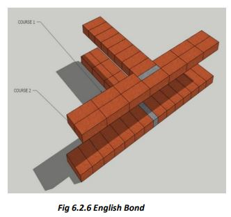

Masonry in Superstructure
The thickness of the walls depend upon the design. Where bricks are costly but stone is available precast stone concrete blocks, hollow blocks, hammer dressed stones etc. are used as masonry units. Walls must be strong enough to bear the loads, check moisture and resist fire and other natural vagaries. The masonry units must be joined using cement mortar. All walls must be designed to take extra loads coming due to natural hazards like earthquakes/ cyclones/ floods/ fires etc.
1. At site, store bricks in stacks. On the day before using the bricks in masonry, spray a lot of water on the stacks
to drench the stack well up to the core.
2. Again spray water before taking the bricks out from the stack for use in masonry. Dry bricks give poor quality
and low strength masonry.
3. The bricks are generally laid in a pattern called English Bond. Wall thickness is equal to one length of the brick
which depends upon the type of brick being used.



Step 6: Masonry above Plinth band
● Once we have reached the plinth level and cast the RCC plinth
band to bind all the walls together and placed all the door
frames in position, it is time to start masonry in superstructure.
● Above the plinth level, we shall use mud blocks (size:
300x150x150 mm) produced locally in the region, for making
walls.
● We will make the walls in a manner so that these walls can
sustain fairly high earthquake forces and have much better
looks and durability.
● We shall use locally available sun dried mud blocks
(300x150x150 mm size) to make 300 mm thick walls in 1:6
cement + sand mortar.
● For safety against earthquakes, winds etc we will tie all the
walls together by RCC bands and vertically we will tie the
foundation, walls and the roof by vertical steel bars provided in
every corner. This is very important in the districts of Lahaul & Spiti and Kinnaur.
● Now that we have provided RCC plinth band on all the walls without any break, we can start masonry in
superstructure.
● Look at the figures and follow the instructions below carefully on how to pass the steel bar through the corners and wall
junctions.
● The gap around the steel bar is filled with 1:1.5:3 cement concrete.
● As shown, we can make corners and T junctions of walls allowing steel bars to pass through without breaking any brick.
● We will make the walls in a manner so that these walls can
sustain fairly high earthquake forces and have much better
looks and durability
● We shall use locally available sun dried mud blocks
(300x150x150 mm size) to make 300 mm thick walls in 1:6
cement + sand mortar.
● For safety against earthquakes, winds etc we will tie all the
walls together by RCC bands and vertically we will tie the
foundation, walls and the roof by vertical steel bars provided in
every corner. This is very important in the districts of Lahaul & Spiti and Kinnaur.
● Now that we have provided RCC plinth band on all the walls without any break, we can start masonry in
superstructure.
● Look at the figures and follow the instructions below carefully how to pass the steel bar through the corners and wall
junctions.
● The gap around the steel bar is filled with 1:1.5:3 cement concrete.
● As shown, we can make corners and T junctions of walls allowing steel bars to pass through without breaking any brick.
Corner Reinforcement Detail
● The masonry is done in English Bond
as shown in the figure.
● Start from a corner. Place one brick in
mortar and leave a gap equal to half
the thickness of a brick (i.e., 3”).
● Place more bricks in mortar. The
vertical bar shall pass through the 3” gap.
● Fill the gap with cement concrete
(1:1.5:3).
● In the next course, the direction of the
bricks shall change (see figure) but
follow the same pattern.
● The bar shall pass through the gaps at corners and T-junctions in alternate
courses as shown. The gaps shall be filled with cement concrete after
every course of masonry to make earthquake-resistant corners.
Step 10: Ferro-Cement Plaster on Mud Walls/Roof
• Ferro-cement Plaster is applied on surfaces to which normal cement plaster does not stick or where the plaster may develop shrinkage cracks.
• Ferro-cement Plaster is more impervious to seepage of water.
• Ferro-cement develops a good bond with the surface and is more resistant to impacts.
Application of Ferro-Cement Plaster on Mud Walls/Roof:
• First repair any cracks etc. in the surface to which ferro-cement
plaster is to be applied.
• You need not repair minor undulations, these will be covered
by the FC plaster.
• Clean the surface thoroughly of any fungus, loose dirt sticking
poster papers etc.
• Now take 20x20mm square mesh of (22 SWG or thicker GI
wire) and wrap around all the walls starting from a corner (A).
• Fix the mesh/Jaali to the walls using GI wire U-nails (min 40mm
long).
• Fix nails at about 300 to 400mm (12 to 18 inches) intervals into
the mud surface.
• Overlap all wire-mesh joints (vertical and horizontal) at least
100mm.
• Apply 15mm thick cement sand plaster to the whole surface
properly covering the mesh and the U-nails. See that nails/wire
mesh are not projecting out of the plaster.
• Finish the surface smooth by steel trowel.
• Water cure the surface for at least 20 days.
Ferro-Cement Plaster on Mud Walls/Roof
• Level and clean the wall/roof surface.
• Fix 20x20mm wire mesh to the whole surface, using U
shaped wire nails 40 to 50mm long.
• Apply cement mortar on the wire mesh, then coat the plaster
with one coat of 1:2:3 cement mortar.
• Apply the final smooth coat of 1:3 cement plaster.
• After curing the plaster properly for 2 weeks, finish the surface with a coat of suitable color.
• The plaster is then allowed to dry for at least 3 to 4 days, and then the same is cured for at least 10-14 days.